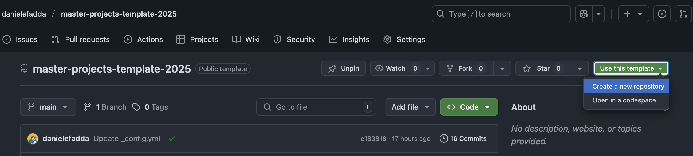
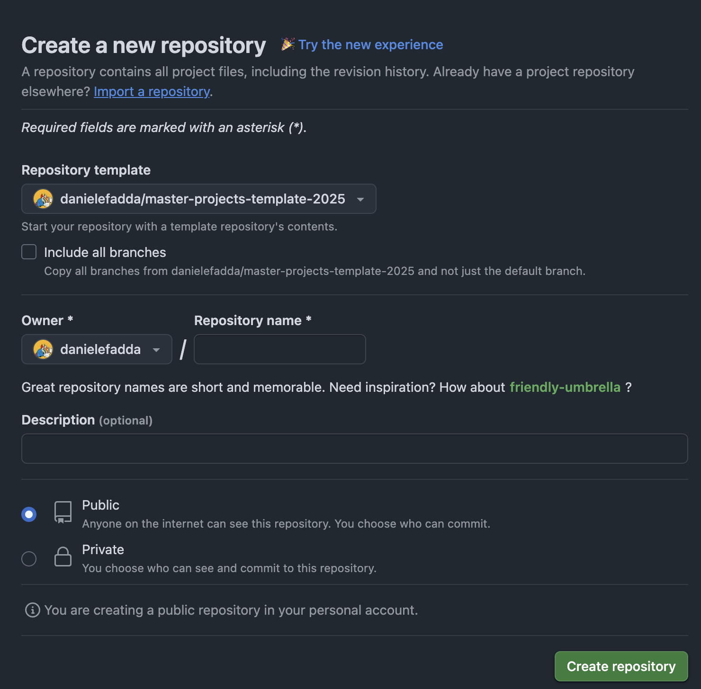
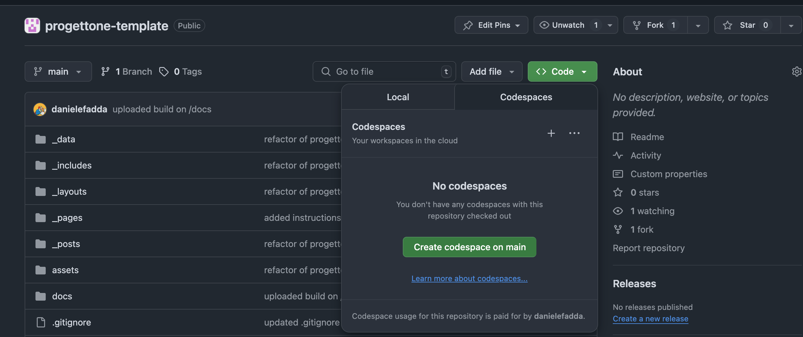
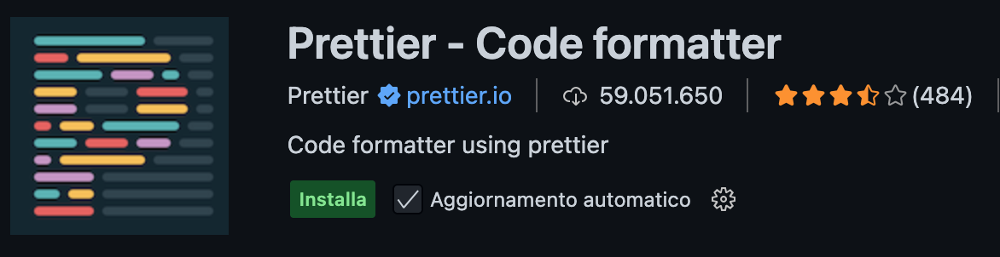
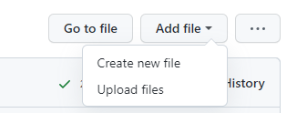

Passaggi principali per costruire un sito web con Jekyll
- Utilizzare questo template Jekyll per creare un nuovo progetto
- Come modificare i file nel repository
- Personalizzare il file
_config.ymlper configurare i dettagli del progetto - Pubblicare il progetto su GitHub Pages
- Creare pagine
- Contenuti multimediali e componenti
- Personalizzare il layout e il design
1. Utilizzare il template Jekyll per creare un nuovo progetto
├─ 🚀 Avviare il progetto usando il template
│ ├─ 📥 Clonare via "Import repository"
│ ├─ 🏷️ Rinominare il repo (es. g0-2026-website)
│ ├─ 👥 Invitare i collaboratori
│ └─ 🖥️ (Opzionale) Sviluppo locale con ruby installato:
│ ├─ 🔧 bundle install
│ └─ 👉 bundle exec jekyll serve → http://127.0.0.1:4000/<repo-name>
Puoi iniziare clonando il repository template di Jekyll per il Template Progetto Big Data.
Creare un nuovo repository usando il template
Vai al seguente link:
https://github.com/danielefadda/master-projects-template-2026
e premi sul pulsante Use this template nell’angolo in alto a destra della pagina e seleziona Create a new repository.

assegnagli un nome basato sul tuo progetto, usando il seguente formato:
g0-2026-website
N.B. devi sostituire g0 con il numero del tuo gruppo.

Lascia la visibilità del repository Public e clicca su “Create repository”.
Una volta clonato il repository, troverai una struttura di cartelle simile alla seguente:
project-template/
│
├── _config.yml # impostazioni di base del sito
├── _data/
│ └── settings.yml # configurazione visuale e contenuto testuale (personalizzabile)
├── _pages/
│ ├── index.md # homepage
│ ├── project.md # descrizione del progetto
│ ├── team.md # membri del gruppo
│ └── deliverables.md # risultati (PDF, poster, ecc.)
├── assets/
│ └── img/ # immagini generiche (es. placeholder)
├── _includes/ # componenti jekyll
└── _layouts/ # layout html
Invita i membri del tuo team al repository in modo che possano collaborare al progetto. Puoi farlo andando nelle impostazioni del repository su GitHub, cliccando su “Manage access” e invitandoli tramite il loro username GitHub o indirizzo email. Ricorda di aggiungere i docenti come membri: danielefadda e Elecapp
Sviluppo locale (opzionale)
Questo è un passaggio opzionale, ma se vuoi sviluppare il sito web localmente, devi installare Jekyll sul tuo computer. Puoi trovare le istruzioni su come farlo nella guida ufficiale o nella nostra sezione sviluppo locale.
Per un riferimento rapido forniamo queste istruzioni:
Una volta clonato il repository, esegui:
bundle install
Quindi avvia il sito con il comando bundle:
bundle exec jekyll serve
apri il tuo browser all’indirizzo **http://127.0.0.1:4000/
2. Come modificare i file nel repository
Puoi modificare i file nel repository direttamente su GitHub. Hai tre opzioni per farlo:
- Modificare i file direttamente su GitHub: Naviga al file che vuoi modificare, clicca sull’icona della matita nell’angolo in alto a destra, apporta le tue modifiche e poi committale.
- Clonare il repository sulla tua macchina locale: Usa Git per clonare il repository sulla tua macchina locale, apporta le tue modifiche usando un editor di testo o IDE e poi pusha le modifiche al repository.
- Usare l’editor codespace di GitHub: Clicca sul pulsante verde
<> codenell’angolo in alto a destra della finestra e apri l’editor codespace. Questo ti consente di modificare i file in un editor più avanzato direttamente nel tuo browser, con funzionalità come l’evidenziazione della sintassi. Ricorda di installare le estensioni necessarie, ad esempioPrettier code formatterper formattare automaticamente il tuo codice. Se non vedi il codespace, puoi cliccare sul pulsanteCodee poi selezionareCreate codespace on mainper creare un nuovo codespace.


3. Personalizzare il file _config.yml per configurare i dettagli del progetto
├─ ⚙️ Personalizzare `_config.yml`
│ ├─ 🏷️ baseurl, url, title, description
│ └─ 🔗 github_repo (link del footer)
Il file _config.yml contiene le impostazioni di base per il tuo sito Jekyll. Puoi personalizzarlo per configurare i dettagli del tuo progetto, come il titolo, la descrizione, l’autore e altre configurazioni. Tutte le variabili nel file _config.yml vengono utilizzate per generare il contenuto del sito e possono essere accessibili nei template e nelle pagine usando la sintassi Liquid. Ad esempio, puoi usare {{ site.title }} per accedere al titolo del sito. Maggiori dettagli su come modificare il file possono essere trovati direttamente nel file stesso, dove puoi trovare commenti che spiegano ogni variabile.
Impostazioni generali
La prima cosa da fare è impostare la variabile baseurl al nome del tuo repository, ad esempio:
baseurl: "/g0-2026-website"
Devi anche impostare la variabile url all’URL del tuo sito GitHub Pages, ad esempio:
url: "https://<username>.github.io"
Quindi, puoi personalizzare le seguenti variabili: title, subtitle e description del sito
Ci sono anche alcune variabili che possono essere utilizzate per personalizzare l’aspetto del sito, come github_repo. Queste variabili vengono utilizzate per inserire informazioni sul repository nel footer del sito.
4. Pubblicare il progetto su GitHub Pages
├─ 🌐 Pubblicare con GitHub Pages
│ ├─ ⚙️ Vai a Settings → Pages
│ ├─ 📂 Seleziona il branch su cui pubblicare (`gh-pages`)
| ├─ ▶️ Andare nel menu Actions e lanciare la action "Publish site to gh-pages branch" per pubblicare il sito
│ └─ 🚀 Il sito è online su https://<username>.github.io/<repo>/
Per distribuire il tuo progetto su GitHub Pages, puoi seguire i seguenti passaggi:
- Crea un nuovo branch chiamato
gh-pagesnel tuo repository. (Puoi farlo usando Git o direttamente su GitHub). - Vai alle impostazioni del repository su GitHub.
- Scorri fino alla sezione “GitHub Pages”.
- Seleziona il branch
gh-pages. - Clicca su “Save” per abilitare GitHub Pages.
- Il tuo sito sarà pubblicato all’indirizzo
https://<username>.github.io/<repository-name>/.
Una volta abilitato GitHub Pages, ogni volta che lanci la action “Publish site to gh-pages branch”, il tuo sito verrà automaticamente aggiornato.
5. Creare pagine
├─ 📄 Creare e organizzare le pagine (`_pages/`)
│ ├─ 🏠 index.md
│ ├─ 📁 project.md
│ ├─ 👥 team.md
│ ├─ 📦 deliverables.md
│ └─ ✏️ Ogni file: front matter → layout, title, subtitle, vega, header_type, ecc.
Ogni file Markdown nella cartella _pages corrisponde a una pagina nel sito web finale. L’aggiunta e la modifica delle pagine possono essere effettuate direttamente nel repository GitHub.
Per aggiungere una pagina, segui questi passaggi:
- naviga nella cartella
_pagese seleziona Add file poi Create new file
- Assicurati che il nome del tuo nuovo file termini con l’estensione
.mdo.markdown(ad esempio,about.md). - La tua nuova pagina è ora pronta per essere modificata! Ti consiglio di scrivere un front matter di base per iniziare.
Il nome del file verrà utilizzato come URL della pagina. Ad esempio, se crei un file chiamato about.md, sarà accessibile all’indirizzo https://<username>.github.io/<repository-name>/about/.
g0-2026-website/
│
├── _pages/
│ ├── index.md
│ ├── about.md
│ ├── team.md
│ └── technical-report.md
├── ...
└── README.md
Front Matter
Ogni pagina dovrebbe iniziare con un blocco front matter YAML che definisce il layout e altri metadati per la pagina.
Il Front Matter è una sezione all’inizio di un file contenente metadati sul file stesso.
È delimitato da tre trattini (---) e può includere variabili come layout, title, subtitle, cover image, header type, ecc.
Queste informazioni vengono utilizzate per personalizzare il contenuto della pagina. Le variabili nel Front Matter sono accessibili tramite variabili Liquid all’interno del file e vengono utilizzate nei template con la dichiarazione ``
Ad esempio:
---
layout: default
title: "Home"
subtitle: "Un template e una guida per sviluppare il tuo sito web del Progetto Big Data"
....
---
Contenuto
Puoi usare titoli, paragrafi, elenchi (e molto altro) per strutturare il contenuto in modo efficace. Questo può essere fatto usando la sintassi Markdown, che consente una facile formattazione del testo. Ad esempio, puoi usare testo grassetto o corsivo per enfatizzare i punti chiave e puoi creare elenchi per organizzare le informazioni in modo chiaro.
Questo è un esempio di come formattare il testo in modo visivamente accattivante e facile da leggere. In questo paragrafo usiamo una classe .lead per evidenziare i punti principali del progetto.
Puoi scrivere un'intera pagina usando solo la sintassi markdown, ma puoi anche usare tag HTML per aggiungere elementi più complessi o layout non standard. In questo esempio, usiamo un paragrafo con una classe .green per evidenziare il testo in colore verde.
Questo tema è basato su Bootstrap, quindi puoi usare tutte le classi Bootstrap per personalizzare il tuo contenuto. Ad esempio, puoi usare la classe .container per creare un container responsive, o le classi .row e .col-* per creare un layout a griglia.
Puoi trovare maggiori informazioni sulle classi Bootstrap a questa pagina: Documentazione Bootstrap.
6. Aggiungere contenuti multimediali e componenti
├─ 🎥 Contenuti multimediali
│ ├─ 🖼️ Immagini
│ │ ├─ 📁 cartella: assets/images/
│ │ ├─ 📝 usa Markdown o tag `img`
│ │ └─ 🖼️ gallerie via `masonry.html` + config
│ ├─ 🎬 Video
│ │ └─ ▶️ incorpora YouTube usando shortcode
│ ├─ 📷 Icone
│ │ └─ 🔍 usa icone Font Awesome
│ ├─ 🖼️ Modal
│ │ └─ 🆕 usa modal Bootstrap per pop-up
│ └─ 📈 Grafici (Vega-Altair)
│ ├─ 💾 salva JSON in assets/charts/
│ ├─ ✅ includi `vega: true` nel front matter
│ └─ 🔗 shortcode `<vegachart schema-url=...>`
Immagini
Puoi aggiungere immagini alle tue pagine usando il tag html img. Per aggiungere un’immagine, devi salvare l’immagine nella directory assets/images e poi usare il tag img o la sintassi markdown per incorporarla nella pagina. Ad esempio:

Galleria di immagini
In questo tema ci sono anche alcuni shortcode che possono essere utilizzati per aggiungere immagini in formato galleria. Salva le immagini nella sottodirectory assets/images/gallery_one e poi usa la seguente sintassi per incorporarle nella pagina:
{% include_cached snippets/masonry.html internal="gallery_one" %}
<div class="container">
{% include_cached snippets/masonry.html internal="charts" %}
</div>


include_cached snippets/masonry.html indica che il file masonry.html è incluso dalla directory _includes/snippets. Il parametro internal viene utilizzato per specificare il nome della sottodirectory in cui sono memorizzate le immagini. In questo caso, le immagini sono memorizzate nella directory assets/images/thumb-charts.
Ricorda di includere la directory assets/images/thumb-charts nel file _config.yml, in modo che le immagini vengano visualizzate correttamente nella galleria. Puoi farlo aggiungendo la seguente riga al file _config.yml:
defaults:
- scope:
path: "assets/images/thumb-charts"
values:
image_col: charts
N.B. presta attenzione all’indentazione delle variabili del yml file, poiché è importante per il corretto funzionamento del tema. Se stai modificando il sito web localmente, riavvia il servizio per visualizzare le modifiche apportate in _config.yml
Video
Puoi includere video youtube usando la sintassi sopra, dove id è l’ID del video e provider è il nome del provider video (in questo caso, youtube). Puoi anche usare altri provider come vimeo o dailymotion. Il video verrà incorporato nella pagina e sarà responsive, adattandosi alla larghezza del container in cui è posizionato.
Icone
Per inserire icone, puoi usare Font Awesome.
<i class="fa-solid fa-pen-nib"></i> Per aggiungere un'icona al testo, basta includere il codice HTML corrispondente.
Una penna
Un’icona codice
Un’icona grafico
Modal
Puoi anche creare modal per visualizzare contenuti o informazioni aggiuntive in una finestra separata senza lasciare la pagina corrente. I modal sono un pattern UI comune utilizzato per visualizzare contenuti in una finestra di dialogo che si sovrappone al contenuto principale della pagina. Questo tema utilizza il componente modal di Bootstrap, che fornisce un modo semplice per creare modal con codice minimo. Per creare un modal, puoi usare la seguente sintassi:
<button type="button" class="btn btn-primary" data-toggle="modal" data-target="#exampleModal">
Avvia demo modal
</button>
<div class="modal fade" id="exampleModal" tabindex="-1" aria-labelledby="exampleModalLabel" aria-hidden="true">
<div class="modal-dialog modal-xl modal-dialog-centered">
<div class="modal-content">
<div class="modal-header">
<h5 class="modal-title" id="exampleModalLabel">Titolo del modal</h5>
<button type="button" class="btn-close" data-bs-dismiss="modal" aria-label="Close"><span aria-hidden="true">×</span></button>
</div>
<div class="modal-body">
Questo è il contenuto del modal. Puoi aggiungere qualsiasi contenuto HTML qui, incluse immagini, testo e altri elementi.
Puoi anche usare questo spazio per fornire informazioni aggiuntive sul tuo progetto, come la metodologia o altri dettagli tecnici.
</div>
<div class="modal-footer">
<button type="button" class="btn btn-secondary" data-dismiss="modal">Chiudi</button>
</div>
</div>
</div>
</div>
Un pulsante viene utilizzato per attivare il modal e gli attributi data-toggle e data-target vengono utilizzati per specificare il modal da aprire. Il modal stesso è definito in un div con la classe modal e contiene un header, body e footer. Puoi aggiungere qualsiasi contenuto HTML desideri all’interno del body del modal.
Questa è una versione alternativa che utilizza un’immagine come trigger per lo stesso modal (stesso ID):
Usando la classe modal-xl, modal-lg o modal-sm puoi cambiare la dimensione del modal, il che è utile se vuoi visualizzare molto contenuto nel modal. Puoi anche usare la classe modal-dialog-centered per centrare verticalmente il modal sulla pagina.
Grafici
🔗 (Vedi guida completa ed esempio per maggiori informazioni)
- Crea il grafico in Altair
Usawidth='container'per la responsività.chart = alt.Chart(data).mark_bar().encode( x='a:N', y='b:Q' ).properties(width='container', height=300) chart.save('chart.json') -
Posiziona il file in
assets/charts/. -
Aggiungi questo HTML alla tua pagina:
Specifica l’altezza del grafico nell’attributo
styleper assicurarti che venga visualizzato correttamente.<div style="height: 400px"> <vegachart schema-url="/g5-2026-website/assets/charts/chart.json" style="width: 100%; height: 100%"></vegachart> </div> - Nel front matter della pagina, se non già presente, aggiungi:
vega: true
Questo è il risultato:
7. Personalizzare il layout e il design
├─ 🎨 Layout & design
│ ├─ 🧭 Navbar e footer via config e `_includes/`
│ ├─ 🎨 Scegli lo skin (graymor, minty, lux…)
│ ├─ 🖌️ Personalizza i colori via `chulapa-skin.vars`
│ ├─ 🆕 Aggiungi Google Fonts (es. Lekton)
│ ├─ 🛠️ Aggiungi CSS personalizzato in assets/css/custom.scss
│ ├─ 🧩 Tipi di header: hero, base, post, image, splash
│ └─ 🧱 Usa classi CSS helper: `.full-width-wrapper`, `.lead`, `.green`, ecc.
Menu di navigazione
Puoi personalizzare il menu di navigazione modificando la variabile navbar nel file _config.yml. Questa variabile è una lista di link che verranno visualizzati nella barra di navigazione del sito. Ogni link è definito da un title e un url. Puoi anche creare sottomenu usando la variabile children, che è una lista di link che verranno visualizzati come sotto-elementi del link principale, ad esempio:
navbar:
style : dual #non cambiare questo, viene usato per impostare lo stile della navbar.
brand: # questo è il brand della navbar, verrà visualizzato sul lato sinistro.
title : "Template per Progetti Master SoBigData"
img: "./assets/images/Logo_masthead.png" # non cambiare questo
url: /
nav:
- title: Guida
url: /guide.html
- title: Pagina di esempio
url: /example.html
- title: Approfondimenti
child:
- title: Sviluppo locale
url: /local-development.html
- title: Markdown
url: /markdown.html
- title: Grafici
url: /charts.html
- title: Folium
url: /folium.html
È abbastanza facile aggiungere nuovi link o modificare quelli esistenti. Segui semplicemente la struttura dell’esempio sopra e puoi creare un menu di navigazione che si adatta alle esigenze del tuo progetto. Si prega di notare che l’ultimo elemento nella navbar deve essere il link SoBigData Master, poiché viene utilizzato per collegarsi al sito web principale dei progetti Master di SoBigData. Ultimo ma non meno importante, controlla la responsività della navbar, poiché dovrebbe funzionare bene sia su dispositivi desktop che mobili.
Aspetto generale
Dopo la sezione di navigazione, puoi trovare la sezione Aspetto generale, che contiene variabili che possono essere utilizzate per personalizzare l’aspetto del sito. Puoi cambiare i colori, i font e altri aspetti visivi del sito. Ne discutiamo più in dettaglio nella sezione layout personalizzato qui sotto.
Personalizzare il tema
Per personalizzare il tema generale, puoi modificare la variabile skin nel file _config.yml.
chulapa-skin:
skin: "graymor"
L’elenco dei temi disponibili è il seguente:
graymor, gitdev-dark, gitdev, universal, academia, gitdev, towards, pear, twitter-lights-out, twitter-dim, wandoo, lymcha, twitter, chulapa, sunset, sunset, minty, lux, journal, deeply.
Puoi personalizzare ulteriormente lo skin selezionato modificando le variabili di colore nel file _config.yml.
chulapa-skin:
vars:
primary-color: "#ff0000"
body-bg: "#fbf1ed"
le variabili sono variabili bootstrap che possono essere utilizzate per personalizzare l’aspetto del sito. Puoi cambiare il colore primario, il colore di sfondo del body e altre variabili per adattarle al branding del tuo progetto. Un elenco completo delle variabili personalizzabili di bootstrap può essere trovato a questo link, mentre un elenco completo delle variabili utilizzate in questo tema può essere trovato a questo link.
Tipi di Header
Ad esempio, puoi usare il layout hero per creare un header a larghezza piena con un’immagine di sfondo e un titolo:
layout: default
title: "Home"
vega: true
header_type: hero
header_img: assets/images/Jekyll_Logo.png
header_title: "Template per Progetti"
subtitle: "Un template e una guida per sviluppare il tuo sito web del Progetto Big Data"
Ci sono diversi tipi di header disponibili, come base, post, hero, image e splash. Puoi scegliere quello che meglio si adatta al tuo contenuto e usarlo nel front matter della tua pagina.
Font
Per importare font diversi da quelli predefiniti del tema usando Google Fonts, devi aggiungere un riferimento nel file _config.yml, che puoi ottenere da Google Fonts:
googlefonts:
- url: "https://fonts.googleapis.com/css2?family=Lekton:ital,wght@0,400;0,700;1,400&display=swap"
Per impostare il font su tutto il sito, aggiungi le variabili nel file _config.yml:
chulapa-skin:
vars:
headings-font-family: "Lekton"
Infine, puoi anche usare i font in modo più mirato, ad esempio all’interno di una singola classe.
Apri il file assets/css/custom.scss per vedere come è stata creata la classe .comic-neue-regular, utilizzata nella seguente riga:
<div class="comic-neue-regular" style="font-size: 20px; color:purple">
Questo è un test per verificare se ho importato correttamente l'orribile font
<span class="comic-neue-bold">Comic Neue</span>
</div>
Footer
La sezione footer è definita nel file _includes/footer.html. Questa sezione non dovrebbe essere modificata direttamente.
Invece, aggiorna il file _config.yml con le informazioni corrette.
In particolare, aggiorna i seguenti campi:
github_repo:
- name: "Gruppo 0 - Repository del progetto"
url: "https://github.com/sobigdata-master/progettone-template"
- name: "Gruppo 0 - Repository del sito web"
url: "https://github.com/sobigdata-master/progettone-template"
Una volta aggiornati i campi, modifica il file _data/members.yml aggiungendo le informazioni dei membri del gruppo.
CSS Personalizzato
Puoi personalizzare il layout e il design del tuo sito usando CSS. Il tema usa Bootstrap, quindi puoi usare tutte le classi Bootstrap per stilizzare il tuo contenuto. Puoi anche creare le tue classi CSS nel file assets/css/custom.scss. Ad esempio, puoi creare una classe chiamata .comic-neue-regular per usare un font personalizzato:
.comic-neue-regular {
font-family: 'Comic Neue', sans-serif;
font-weight: 400;
}
.comic-neue-bold {
font-family: 'Comic Neue', sans-serif;
font-weight: 700;
}
Puoi quindi usare questa classe nel tuo codice HTML per applicare il font personalizzato a elementi specifici:
<div class="comic-neue-regular">Questo è un test per vedere se ho importato correttamente l'orribile font <span class="comic-neue-bold">Comic Neue</span></div>
Se vuoi aggiungere un CSS personalizzato a una pagina specifica, puoi usare la sintassi {: .class-name } alla fine del paragrafo o elemento che vuoi stilizzare. Ad esempio, puoi usare la classe .lead per evidenziare i punti principali del progetto:
Questo è un esempio di come formattare il testo
{ : .lead }
La classe full-width-wrapper
Abbiamo creato una classe speciale per allargare la larghezza di una colonna: full-width-wrapper. Puoi usarla per creare una sezione a larghezza piena che si estende per l’intera larghezza della pagina. Per farlo, puoi avvolgere il contenuto in un div con la classe full-width-wrapper. Ad esempio:
<div class="full-width-wrapper">
<img src="/g5-2026-website/assets/images/header.svg" alt="sbd-pattern" class="full-width-image">
</div>
Questo creerà una sezione a larghezza piena con l’immagine specificata. Puoi anche usare la classe full-width-wrapper per creare una sezione a larghezza piena con un colore di sfondo o un’immagine. Ad esempio:
Perché usare e non usare la classe `full-width-wrapper`?
La classe full-width-wrapper è utile quando vuoi creare una sezione che si estende per l'intera larghezza della pagina, come un divisore di sezione o un'immagine a larghezza piena. Tuttavia, dovresti evitare di usarla per l'intera pagina poiché può portare a un layout meno leggibile, specialmente su schermi grandi e con molto testo. Invece, usala per sezioni specifiche in cui vuoi creare un impatto visivo o evidenziare contenuti importanti o inserire una galleria di immagini o un grafico con molti dettagli che necessita di più spazio per essere visualizzato correttamente.
Riepilogo
Questa che segue è una panoramica sintetica dei passaggi visti in questa guida:
💡 Guida: Costruire un sito web con Jekyll
│
├─ 1. 🚀 Utilizzare questo template Jekyll per creare un nuovo progetto
│ ├─ 📥 Clonare via "Import repository"
│ ├─ 🏷️ Rinominare il repo (es. g0-2026-website)
│ ├─ 👥 Invitare i collaboratori
│ └─ 🖥️ Sviluppo locale con ruby installato
│ ├─ 🔧 bundle install
│ └─ 👉 bundle exec jekyll serve → http://127.0.0.1:4000/<repo-name>
│
├─ 2. 📝 Come modificare i file nel repository
│ ├─ ✏️ Modificare su GitHub
│ ├─ 💻 Clonare localmente
│ └─ 🖥️ Usare GitHub Codespaces
│
├─ 3. ⚙️ Personalizzare il file `_config.yml` per configurare i dettagli del progetto
│ ├─ 🏷️ baseurl, url, title, description
│ └─ 🔗 github_repo (footer, link)
│
├─ 4. 🌐 Pubblicare il progetto su GitHub Pages
| ├─ Crea branch `gh-pages`
│ ├─ ⚙️ Vai a Settings → Pages
│ ├─ 📂 Seleziona branch `gh-pages`
│ └─ 🚀 Il sito è online su https://<username>.github.io/<repo>/
│
├─ 5. 📄 Creare pagine
│ ├─ 🏠 index.md
│ ├─ 📁 project.md
│ ├─ 👥 team.md
│ ├─ 📦 deliverables.md
│ └─ ✏️ Ogni file: front matter → layout, title, subtitle, vega, header_type, ecc.
│
├─ 6. 🎥 Contenuti multimediali
│ ├─ 🖼️ Immagini
│ │ ├─ 📁 cartella: assets/images/
│ │ ├─ 📝 usa Markdown o tag `img`
│ │ └─ 🖼️ gallerie via `masonry.html` + config
│ ├─ 🎬 Video
│ │ └─ ▶️ incorpora YouTube usando shortcode
│ ├─ 📷 Icone
│ │ └─ 🔍 usa icone Font Awesome
│ ├─ 🖼️ Modal
│ │ └─ 🆕 usa modal Bootstrap per popup
│ └─ 📈 Grafici (Vega-Altair)
│ ├─ 💾 salva JSON in assets/charts/
│ ├─ ✅ includi `vega: true` nel front matter
│ └─ 🔗 shortcode `<vegachart schema-url=...>`
│
├─ 7. 🎨 Personalizzare il layout e il design
│ ├─ 🧭 Navbar e footer via config e `_includes/`
│ ├─ 🎨 Scegli lo skin
│ ├─ 🖌️ Personalizza i colori
│ ├─ 🆕 Aggiungi Google Fonts
│ ├─ 🛠️ Aggiungi CSS personalizzato
│ ├─ 🧩 Tipi di header
│ └─ 🧱 Usa classi CSS helper
│
└─ ✅ Checklist finale prima del rilascio
├─ 🔒 Repo e baseurl sono corretti
├─ 📝 Front matter in tutte le pagine
├─ 🔗 Navbar/footer aggiornati
├─ 👥 Team elencato in `_data/members.yml`
└─ 📂 Risorse multimediali posizionate correttamente
Questa guida fornisce una panoramica completa di come creare un sito web usando Jekyll, dalla configurazione del progetto alla personalizzazione del layout e del design. Seguendo questi passaggi, puoi creare un sito web dall’aspetto professionale per il tuo progetto Big Data che sia facile da mantenere e aggiornare.